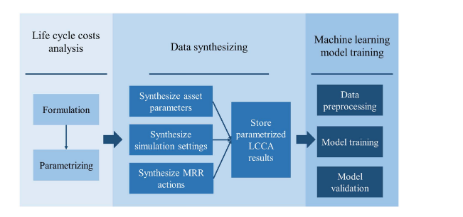
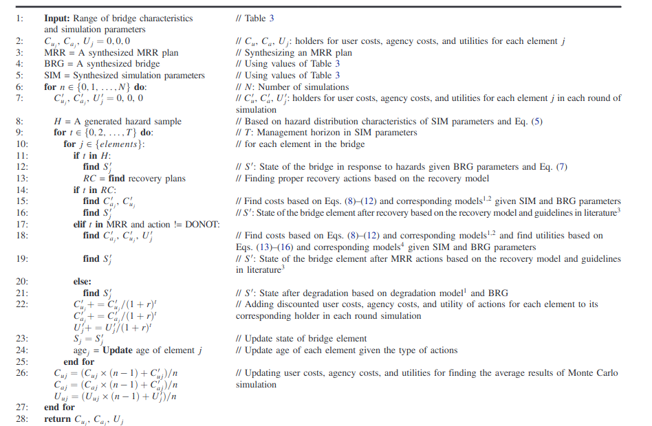
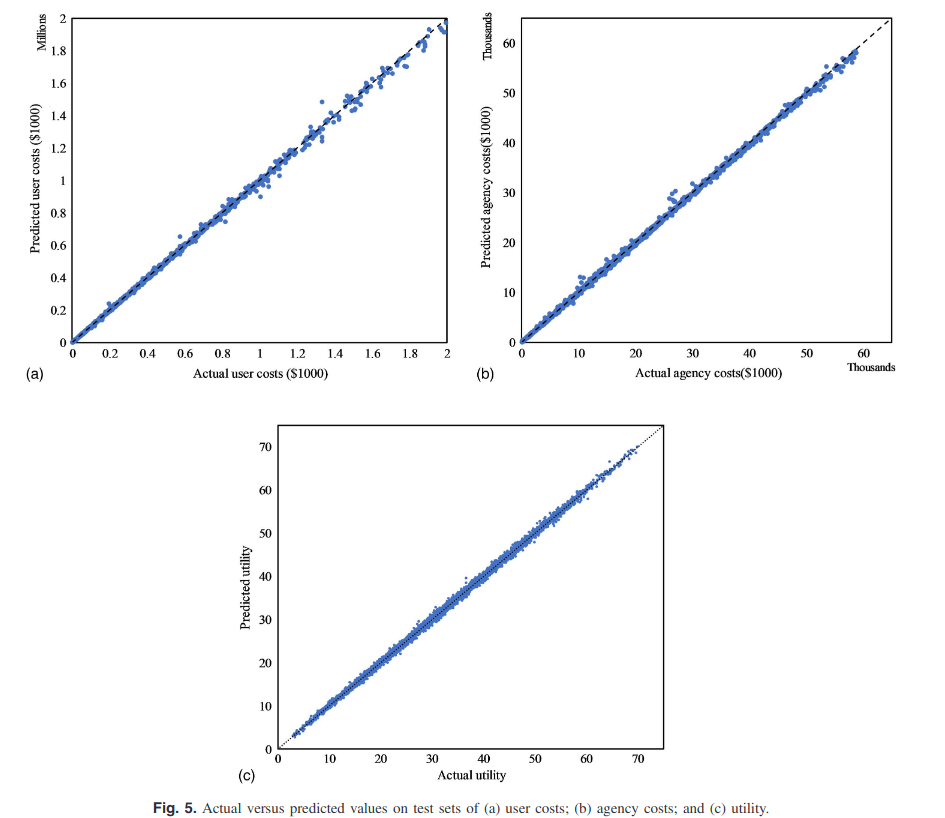

Estimating Monte Carlo Simulation Results
May 17, 2025
Table of Contents
Motivation
Imagine you’re tasked with making a big decision—say, managing a portfolio of investments, pricing a derivative, or planning maintenance for a city’s infrastructure, or optimizing a supply chain. You need to weigh costs, risks, and benefits over time, but multiple uncertainties make it a computationally intensive task. Traditionally, you’d run Monte Carlo simulations to estimate the outcomes, but it can take minutes, hours, days, or even months, depending on the complexity of the model.
What if you could get the same insights in milliseconds or even microseconds?
That’s what this paper is all about. I developed a way to use artificial intelligence (AI) to speed up these calculations, making it easier to make decisions quickly and confidently.
Given my background in infrastructure asset management, the example is about some infrastructure project. But the method is general and can be applied to any Monte Carlo simulation.
The paper is published in the ASCE Journal of Management in Engineering.Why It Matters
Whether you’re pricing an exotic option, maintaining bridges, trading stocks, or scheduling factory production, you need to predict costs and outcomes over time. The go-to method for these problems is Monte Carlo simulation, which looks at all possible outcomes and gets an average. The problem? It is too slow.
I wanted to fix this. Slow calculations mean delayed decisions, which can cost money or miss opportunities. My goal was to use AI to predict Monte Carlo simulation results instantly, without sacrificing accuracy. For example, pricing an exotic option could go from milliseconds to microseconds. Planning maintenance for bridges could go from months to hours, saving time and resources. The same idea applies anywhere you need to plan under uncertainty, like in finance or logistics.
How Does It Work?
The core of my approach is replacing the slow, number-crunching part of Monte Carlo simulation with a machine learning model. In this case, a deep neural network (DNN) was used. Think of a DNN as a brainy assistant that learns from examples to make predictions. Here’s how the DNN was built and trained:
- Creating a Massive Dataset: To train the AI, we needed lots of data. For bridges, we didn’t have enough real ones, so we generated over 1.4 million “virtual” bridges with different traits—size, age, traffic, and so on—based on real data from the U.S. National Bridge Inventory. For the option pricing example, we can generate millions of scenarios with different stock prices, interest rates, volatility, rate, and so on. This is like creating a virtual universe of possible scenarios (options, bridges, etc.) to cover every possible scenario.
- Simulating Scenarios: For each virtual bridge (or option), you should run Monte Carlo simulations to calculate costs and benefits or the option payoff. This created a huge dataset of scenarios and their outcomes, like a playbook of what might happen.
- Training the DNN: This dataset was fed into the DNN, teaching it to predict costs and benefits or the option payoff for any scenario. The DNN learned to spot patterns—for example, how much will be the option payoff for a given stock price, interest rate, volatility, etc. It was tweaked for accuracy, normalizing data and choosing a “cost function” (mean absolute percentage error, or MAPE) to ensure it handled big and small numbers fairly.
- Testing the AI: The DNN’s predictions were compared against traditional Monte Carlo simulation results to see if it could match their accuracy in a fraction of the time. It was also compared to other machine learning models, like decision trees, to confirm it was the best fit.
The algorithm for the context of infrastructure asset management is provided below, but the method is general and can be applied to any Monte Carlo simulation.

What Was Found?
The results were a game-changer. Our DNN was 98% reliable (measured by R-squared) with errors under 2% (using MAPE). Most impressively, it was lightning-fast. A traditional Monte Carlo simulation took about 5 seconds, but our DNN did it in 0.0004 seconds—thousands of times faster. For a universe of 50,000 assets, this could slash calculation time by several orders of magnitude. In other contexts, like financial modeling, this speed could mean real-time decision-making instead of waiting seconds for results.
Compared to other models like random forests or linear regression, the DNN shone because it could handle complex, nonlinear patterns in the data. It’s also flexible—you can keep training it with new data, no need to train the model from scratch.
The actual vs. predicted results are provided below.

How It Can Change Option Pricing
While we tested this method on bridges, its real strength is its versatility, and option pricing in financial markets is a prime candidate for a makeover. Pricing options—like calls or puts—requires estimating future asset prices under uncertainty, much like predicting bridge maintenance costs. Traditional methods, like Monte Carlo simulations or binomial trees, are accurate but slow, especially for complex options or large portfolios. Our AI approach could change the game. Here’s how:
- Lightning-Fast Pricing: Option pricing often involves simulating thousands of possible price paths for the underlying asset, factoring in volatility, interest rates, and time to expiration. The DNN, trained on vast datasets of simulated price paths (similar to our virtual bridges), could predict option prices in milliseconds or microseconds.
- Handling Complex Options: Exotic options, like barrier or Asian options, have intricate payoff structures that make simulations even slower. The DNN can learn the nonlinear relationships between inputs (like strike price, volatility, or barrier levels) and option prices.
- Scalability for Portfolios: Pricing a single option is one thing, but managing a portfolio with thousands of options is a computational nightmare. This approach can price entire portfolios instantly, helping hedge funds or market makers optimize strategies or assess risk across millions of contracts in real time.